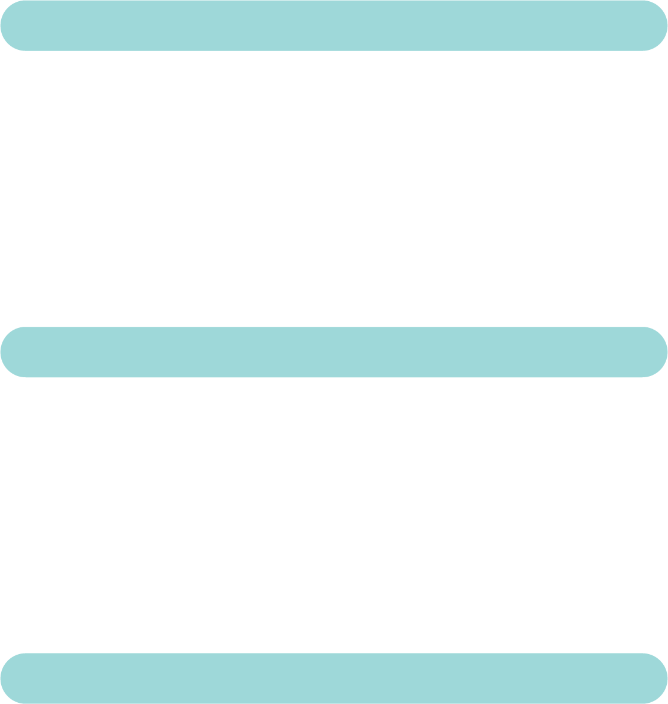
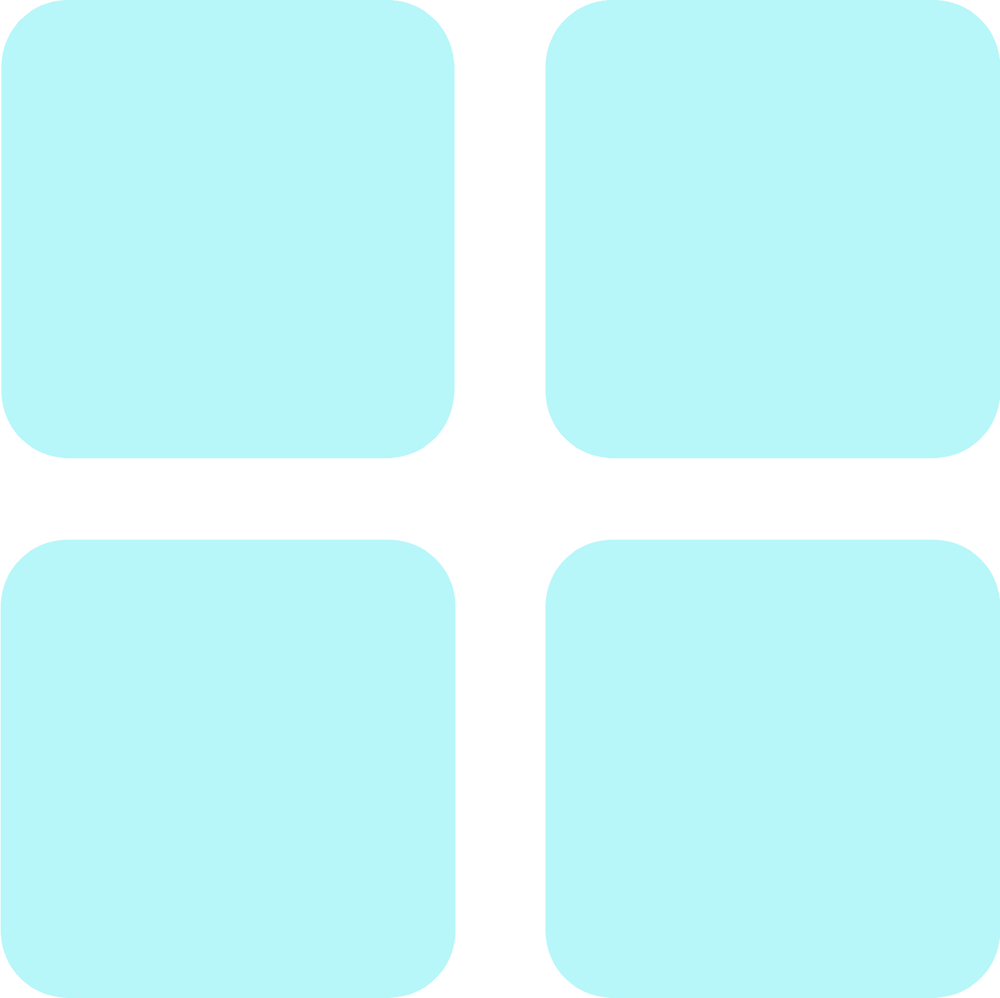

종이류



 스프링, 타재질과 종이
스프링, 타재질과 종이
재질을 따로
분리한 후 배출 종이팩, 종이컵 내용물을 비운 뒤
압축해 봉투에 넣거나,
다른팩에 5 ~ 6개씩넣거나
펴서 말린 후 배출 상자 상자에 붙어있는 테이프와
스티커를 제거 상자를 펼쳐
타재지와 별도로 배출 신문지 물기에 젖지 않도록하고
반듯하게 펴 쌓은 후
끈으로 묶어 배출
스프링, 타재질과 종이재질을 따로
분리한 후 배출 종이팩, 종이컵 내용물을 비운 뒤
압축해 봉투에 넣거나,
다른팩에 5 ~ 6개씩넣거나
펴서 말린 후 배출 상자 상자에 붙어있는 테이프와
스티커를 제거 상자를 펼쳐
타재지와 별도로 배출 신문지 물기에 젖지 않도록하고
반듯하게 펴 쌓은 후
끈으로 묶어 배출